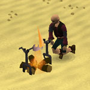
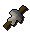

Firemaking - Extra Features
Iron Spits | Dorgeshuun Lightorbs | Haunted Woods Torches | Gnomish Firelighters | Summoning Familiars | Barbarian Assault Double XP | Dungeoneering | Quests
Iron Spits

This piece of equipment can be used to cook some meats on an open fire. You can cook rabbit and chompy meat on the spit. For further information about how to use the spit, please see the extra features of the cooking section.
Dorgeshuun Lightorbs
 The cave goblins of Dorgesh-Kaan have a curious system of lightorbs with which they stave off the darkness. If you wish to repair them, you'll discover a new way of earning Firemaking experience. Click here to read about repairing the lamps of Dorgesh-Kaan.
The cave goblins of Dorgesh-Kaan have a curious system of lightorbs with which they stave off the darkness. If you wish to repair them, you'll discover a new way of earning Firemaking experience. Click here to read about repairing the lamps of Dorgesh-Kaan.
Haunted Woods Torches
 While you are woodcutting in the Haunted Woods, you can light the torches there to gain valuable Firemaking experience. To light a torch you will need a piece of bark from the hollow trees in the area, a tinderbox, and level 47 Firemaking. Lighting the torches will also net you a handy restore of 10 prayer points: useful if you are being 'swamped' by vampires.
While you are woodcutting in the Haunted Woods, you can light the torches there to gain valuable Firemaking experience. To light a torch you will need a piece of bark from the hollow trees in the area, a tinderbox, and level 47 Firemaking. Lighting the torches will also net you a handy restore of 10 prayer points: useful if you are being 'swamped' by vampires.
Gnomish Firelighters
 When completing a Treasure Trail of any level, you may well receive some 'gnomish firelighters'. The higher the level of your clue scroll, the more firelighters you are likely to receive. These firelighters can be applied to logs, and will always succeed in igniting them. The best part, though, is that the logs will burn with delightfully coloured flames!
Summoning Familiars
Using the Summoning skill, you'll find that there are a few familiars that might be useful for training your Firemaking. Of particular note are the beasts of burden, who can carry items for you. In addition to whatever else they can do for you, these familiars will increase the amount of time you can train before having to head to a bank.
Barbarian Assault Double XP
It is possible to get double XP when firemaking with logs. Travel to Barbarian Assault and talk to Commander Connad to receive a penance horn; this can be charged by playing waves of the activity, as long as you ensure that the switch in the waiting room is changed to 'XP'. With charges on the horn, you will automatically receive double XP when firemaking with logs. You can then 'check-potential' the horn at any time to find out how many charges remain on it.
Firemaking Training in Dungeoneering
It is possible to train all of your skills while dungeoneering, and Firemaking is no exception. You can light fires using the wood of Daemonheim, and ignite its furnaces and ranges. You can also gain Firemaking experience by completing firemaking skill doors.
- To find out more about skill doors and the basics of dungeoneering, please click here
- To find out about firemaking in Daemonheim, click here
- To find tables with Firemaking requirements and XP levels, click here
Quests giving Firemaking Experience
For information on which quests reward you with Firemaking experience see the Firemaking Rewards page.
Click here to view the Firemaking FAQs

More articles in
Firemaking
|
|
|
Further Help
Need more help? Come chat with us!
|
|